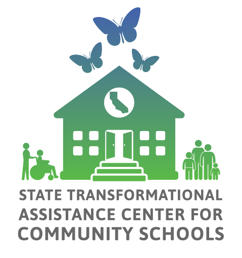

APR Data & Insights
California Community Schools Partnership Program | Year 4 (2025–26)
Resources
Previous APR Responses
Community Schools Needs and Assets Assessment (NAA) Guide
Capacity Building Strategies (CBS): A Developmental Rubric
Rubrics
Capacity-Building Strategies: Self-Assessments
Self-Assessments
Whole Child & Family Supports Inventory
About the Annual Progress Report
The Annual Progress Report (APR) serves as a tool to assess implementation progress and efforts under the California Community Schools Partnership Program (CCSPP), and to encourage reflection as part of an ongoing continuous improvement process. The APR was designed to be filled out by each school’s CCSPP shared decision-making team or council to ensure the perspectives of students, staff, families and community partners are captured. The reporting portal is intended to align with required annual update presentations on community school planning, including data and outcomes from the prior year at each school site. The APR is aligned with the California Community Schools Framework and also aligns with resources provided by the State Transformational Assistance Center (S-TAC) listed in the side bar.
CCSPP at a Glance
Year 2 (2023-2024)
Year 3 (2024-2025)
Year 4 (2025-2026)
What Are We Learning from the APR?
Building Capacity
In Year 4, “Strategic Community Partnerships” continues to be the strategy with the highest percentage of schools and LEAs with a self rating of “Transforming.” Across all of the capacities, findings for Cohorts 1, 2 and 3 show that schools are moving beyond the planning and visioning stage to true and enduring transformation.
Strengthening Engagement
Research tells us that relationships are not peripheral; they are central to sustained implementation, equitable decision-making, and long-term success. In Year 4, 80% of CCSPP schools showed high engagement of administrators (75-100%) and approximately half of schools had high engagement of certificated staff and students. Schools were most successful in engaging socioeconomically disadvantaged students and racially marginalized populations.
Whose Voices Are Being Engaged?
Percentage of schools reporting high engagement (75-100%) among selected student groups, Year 4
Year 4 APR, school-reported engagement. These percentages describe the share of schools reporting high engagement, not the percentage of students participating.
Supporting the Whole Child
During 2025-26 school year, nearly 84% of all CCSPP schools provided programs and practices that teach socioemotional skills. Of those who implement them, 15% started thanks to CCSPP funds. Over 45% of schools in the program implemented community-based curriculum, pedagogy, and projects as part of their community schools work; of them, 30% started thanks to the CCSPP. Throughout the last four years, the percentage of Cohort 1 schools implementing programs and practices that teach socioemotional skills has grown from 88% to 93%, and schools implementing community-based curriculum, pedagogy, and projects has grown from 45% to 63%.
What schools implemented in 2025–26
Share of all CCSPP schools
Growth among Cohort 1 schools over four years
Percent of Cohort 1 schools implementing each practice
Percentages refer to the share of schools reporting implementation.
What goals are community schools prioritizing?
In Year 4, top school-level goal categories included:
Schools are identifying a range of priorities, beyond academics. Half of CCSPP grantees indicated that they are using locally developed metrics to track progress in their school specific goals.
Improving School Climate
CCSPP schools focus on School Climate as part of their whole-child approach and many of them also measure progress in this area to determine how safe, supportive and connected students, families and staff feel in their school environment. Most schools also report positive change since implementing CCSPP: 80% agree that their school climate has improved since beginning CCSPP implementation.
Building Systems of Support
In Year 4, approximately 80% of LEAs reported supporting schools to access and use data, coordinating with County Offices of Education (COEs), and engaging with R-TACs to a large or moderate extent to establish a system of support. Establishing a system-level problem-solving structure and learning groups focused on community-based pedagogy were only common for approximately 65% of LEAs.
Site & LEA Counts
| Cohort | Site Count |
|---|---|
| Cohort 1 | 457 |
| Cohort 2 | 571 |
| Cohort 3 | 998 |
| Cohort 4 | 469 |
| Grand Total | 2,495 |
| Cohort | LEA Count |
|---|---|
| Cohort 1 | 75 |
| Cohort 2 | 104 |
| Cohort 3 | 251 |
| Cohort 4 | 97 |
| Grand Total | 527 |
*Number of participating LEAs (unique). The number of granted LEA per cohort might vary, since some LEAs were awarded grants in more than one cohort.
 |